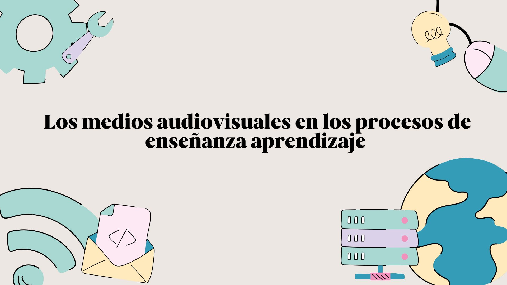

Tema
Los medios audiovisuales facilitadores y dinamizadores de aprendizajes

En el mundo educativo actual, donde la información circula de manera vertiginosa y los estudiantes están en constante contacto con recursos tecnológicos, los medios audiovisuales se convierten en aliados estratégicos para la enseñanza. Estos recursos no solo transmiten contenidos, sino que también facilitan la comprensión, despiertan la motivación y dinamizan el proceso de aprendizaje, al integrar imágenes, sonidos y movimiento que estimulan diferentes canales sensoriales.
Lejos de ser simples herramientas de apoyo, los medios audiovisuales actúan como facilitadores del aprendizaje, al permitir que los estudiantes construyan significados de forma activa, y como dinamizadores, al transformar la experiencia en un proceso más interactivo, participativo y cercano a su realidad. En este sentido, su uso consciente y pedagógicamente planificado se convierte en una oportunidad para desarrollar competencias comunicativas, cognitivas y creativas que responden a las demandas del siglo XXI.